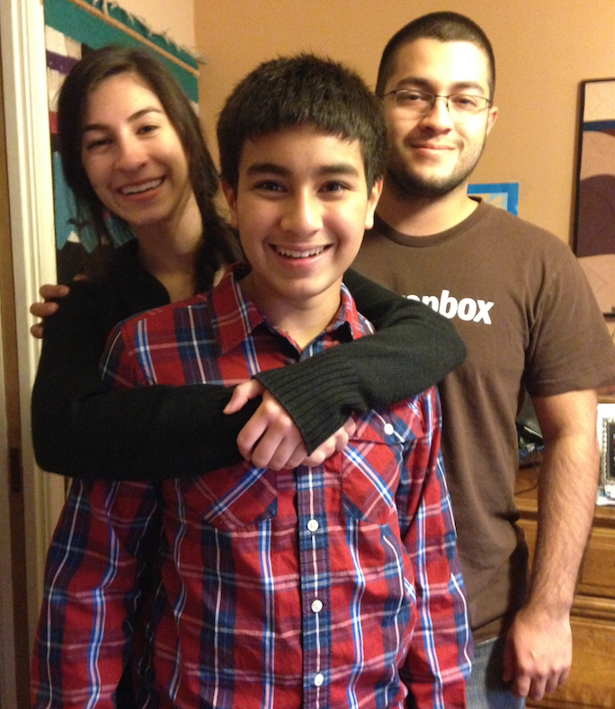

My name is Miles Reyes. I am 13 years old and an eighth grader attending Los Coyotes Middle School. I take honors classes and maintain a 4.0 GPA. I am involved in ASB Leadership, planning, hosting and setting up audio equipment for various events includuing dances. My favorite subject is science and I enjoy the labs we do in class. Recently, I set a record in my class for the farthest distance traveled, 12.9 meters, with a Newton Vehicle. I am very outgoing and I like to participate in extracurricular actvities. I started a gaming club at my school with some of my friends. We mainly play strategy games in four on four matches. The gaming club was created to enhance teambuilding and communication skills while having a good time. My family has rescued four different animals, a gopher snake, a tortoise, and our two dogs.
I have an older sister who is currently attending the University of Pennsylvania and an older brother who recently graduated from Carnegie Mellon University. Both of my siblings have encouraged me to pursue higher education and eventually graduate from a university.
I competed in the Academic Pentathalon in sixth and seventh grade, earning 10 medals in the sixth grade and six medals in the seventh grade.
I have always had a love of technology ever since I saw my brother make his own computer and watched it boot up for the first time. At home, I enjoy watching Formula One racing with my dad. I also have an interest in space flight programs and have been to see the Endeavour exhibit at California Science Center. I enjoy cinematography and have many favorite directors like Francis Ford Coppola, Stanley Kubrick, and Quetin Tarantino. I have two rescue dogs, one who is 18 years old and another who is three years old,recently rescued. I have been swimming since I was three and consider myself a good swimmer and naturally interested in playing water polo for Brea.
After graduating from high school, my goal is to attend Carnegie Mellon University and major in computer science. My dream job is to work at Microsoft as a lead project manager and I know with hard work and perserverance it can be a reality.